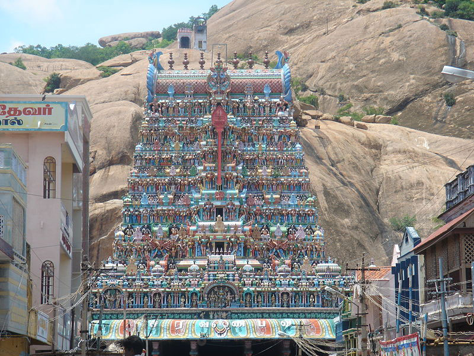

One of the six abodes of Lord Murugan.
Rock‑cut architecture, ancient inscriptions, and shrines for multiple deities.
It’s considered highly sacred, especially for devotees of Lord Murugan, and is historically significant as a site of religious harmony.